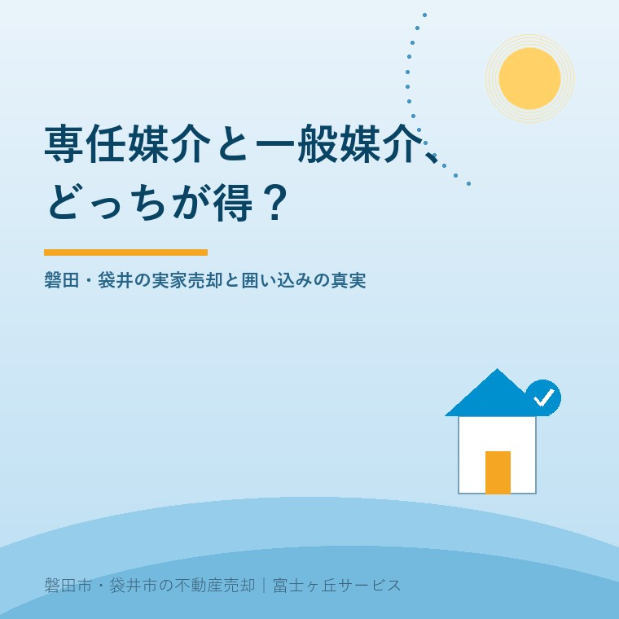

専任媒介と一般媒介どっちが得？｜磐田の実家売却で選ぶ基準
公開日：2026年9月11日 ｜ 著者：大石浩之（宅地建物取引士）

この記事の結論
Q. 実家の売却は一般媒介と専任媒介のどちらが有利？
A. 磐田・袋井エリアでは、確実に営業広告費が投じられ報告義務のある専任媒介が手堅く有利です。レインズ登録証明書を確認して囲い込みを防ぐことが肝心です。 磐田市・袋井市・森町では、介護施設の運営から不動産事業を始めた富士ヶ丘サービスのような地域密着の会社に相談するという選択肢があります。
「何社にも声をかけられる一般媒介」が本当に有利か
実家の売却を考え始めた売主様から『少しでも早く、高く売りたいので、3〜4社の不動産会社に一般媒介でお願いした方が競争になって良いですよね？』と質問されることがよくあります。
理屈の上では、多くの会社が同時に買い手を探してくれた方が有利に見えます。しかし、磐田市や袋井市のような地方都市の不動産流通現場では、一般媒介にした途端に各社の販売意欲が落ちてしまい、結果として放置されてしまうケースが珍しくありません。
不動産会社の本音を言えば、一般媒介契約の物件は『他社で成約してしまえば広告宣伝費も人件費も1円も回収できないリスク』があります。そのため、大手ポータルサイトへの有料枠掲載や熱心な営業活動は、確実に成約報酬が得られる専任媒介の物件へ優先して投入されるのが現実です。
専任媒介の義務とメリット｜レインズ登録と定期報告
一方で、1社に絞って依頼する『専任媒介契約（または専属専任媒介契約）』には、法律（宅地建物取引業法）によって不動産会社に厳しい義務が課されています。
第一に、契約締結から7日以内（専属専任は5日以内）に、国土交通大臣指定の不動産流通標準情報システム『レインズ（REINS）』への物件登録が義務づけられています。登録すると全国の仲介業者が物件情報を閲覧できるようになるため、窓口が1社であっても市場全体に情報が行き渡ります。
第二に、2週間に1回以上（専属専任は1週間に1回以上）の文書またはメールによる業務状況報告が義務です。『今週は何件の問い合わせがあり、内覧が何件あったか』を定期的に把握できるため、価格設定の見直しや販売作戦の練り直しを機動的に進められます。
「囲い込み」を見抜く3つのチェックポイント
専任媒介で唯一注意しなければならないのが、不動産会社が売主と買主の双方から手数料を得ようとして他社からの客付けを断る『囲い込み（両手狙い）』です。
囲い込みを防ぐためには、以下の3点を確認することが重要です。
1. レインズ登録証明書を必ず受け取り、ステータスが『公開中』になっているか確認する。
2. 他社から内覧希望が入った際の対応方針を事前に確認しておく。
3. 問い合わせや内覧が極端に少ない場合、価格だけでなく他社紹介を止めていないか質問する。
磐田市・袋井市の実情に合わせた売却戦略
磐田市や袋井市では、見付や中泉、今之浦などの駅前・幹線道路沿いと、三ヶ野や豊田、浅羽などの郊外集落では買い手の動きが大きく異なります。
親御さんの施設入居費用や介護費用の捻出のために期限を決めて売却したい場合は、信頼できる地元密着の1社に専任で任せ、反響を見ながら2〜3ヶ月スパンで確実に成約へ導くのが最も安全な進め方です。前回の記事居住サポート住宅とはでも触れたように、実家の活用には様々な選択肢があります。
よくあるご質問
- 一般媒介で複数の会社に頼むと早く売れますか？
- 人気エリアの好条件物件を除き、地方都市では各社の広告優先順位が下がってしまい長期放置されるリスクがあります。専任で1社に責任を持たせる方が成約率が高まる傾向があります。
- 専任媒介の契約期間は何ヶ月ですか？
- 法律で上限は3ヶ月と定められています。3ヶ月経過後に成果が出ていなければ、契約を更新せず他社へ切り替えることも自由です。
- 不動産会社の手数料は契約方式で変わりますか？
- 仲介手数料の上限（売買価格の3％＋6万円＋消費税など）は、一般媒介でも専任媒介でも全く同じです。成約時にのみ成功報酬として支払います。

この記事を書いた人：大石浩之（宅地建物取引士・富士ヶ丘サービス代表）
磐田市・袋井市・森町で介護事業と不動産仲介を営む実務家。親の介護施設入居や実家じまいに伴う不動産売却を、売主様側の専任視点で一件ずつ丁寧に支援しています。ふじがおか実家カルテのご案内
参考にした公式情報（2026年9月確認）
- 国土交通省「宅地建物取引業法（媒介契約制度）」（2026年9月確認）
- 国税庁「被相続人の居住用財産（空き家）を売ったときの特例」（2026年9月確認）
- 磐田市公式「空き家対策・各種相談窓口」（2026年9月確認）
※税務・登記・法的手続きの個別判断は、必ず税理士・司法書士・所轄税務署等の専門家にご確認ください。